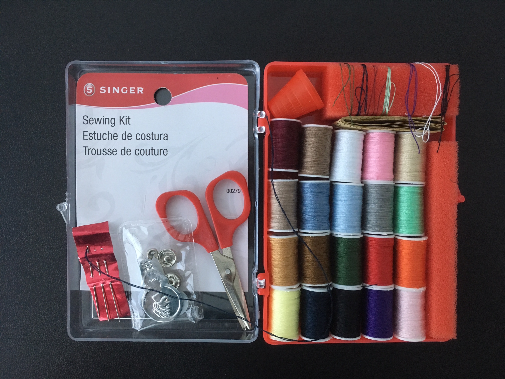

Have an idea and a budget. It's easy to get overwhelmed by the racks stuffed with clothes. It's also easy to get distracted. If you have an idea about what you are looking for, you are more likely to find something that brings you joy and less likely to buy something you don't want or need.
Shop early. You will avoid the crowds and have a better chance of getting into the fitting room.
Wear form fitting clothes. Some stores will not have a fitting room. You may have to try on clothes over what you are already wearing. There will be full-length mirrors on the sales floor for shoppers to use.
Inspect before you purchase. Thoroughly examine the clothes for holes or stains. If there is a defect, you may be able to fix it on your own. Only purchase what you can manage since sales are final at some stores.
At Home

Sewing KitPhoto: Chaltin Pagan
Wash before you wear. As with any clothing purchase, always launder the item before you wear it. This reduces dye transfer and allergic reactions.
Sewing Kit. A sewing kit is a must-have for repairing small rips in a garment. A standard kit comes with assorted colors of thread, small scissors, and sewing needles. A kit costs around $5 and can be purchased at your local pharmacy.
YouTube. There are a lot of channels devoted to thrifting. It's a great place to get inspiration. See the section Resources for some recommndations.